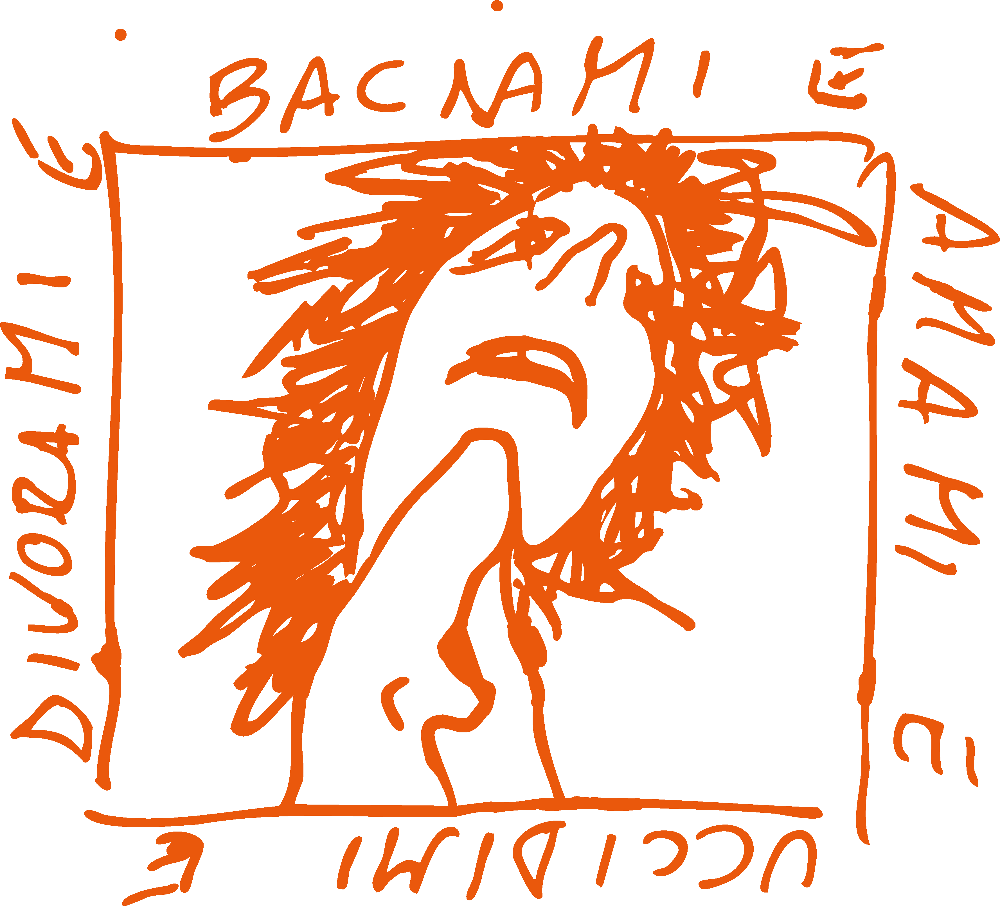

Io sono Pietro.
I was born at the turn of the century, between the Rabbit and the Dragon, a Faenza, fra tutti i posti; una delle piccole città italiane più noiose che potete immaginarvi. Non mi credete? Beh, non me ne frega un cazzo.
Sono stato addestrato accademicamente nelle arti visive da quand'avevo tredici anni, proseguendo i miei studi universitari all'Accademia di Belle Arti di Bologna sotto la tutela di Luca Bertolo. L'accademia era uno scherzo.
Divertente, ammetto, ma gli scherzi non dovrebbero avere rette d'iscrizione, no? For this, and a ludicrous amount of other reasons, I decided to leave Italy and pursue a higher education in England, ending up in Newcastle upon Tyne. How did that happen? I'm not sure either, but I don't regret it. Still, it wasn't the place for me.
I applied to Camberwell College of Arts and got in, finishing my BA there with first-class honours.
Camberwell aveva i suoi grossi problemi, ma dopo aver cambiato istituto tre volte decisi di chetarmi e di star zitto (joking, I can't do that). Right after my BA, I got into Central Saint Martins, initially on the MA Photography and Philosophy, which I then switched to MAFA. The Odyssey that has been my time at CSM should not be divulged to whoever you think you are, here, on the web; I'm not your cape crusader.
Buy me a drink IRL, though, and I'll spill the tea. I'll spill it all on your fancy shoes, and you'll kindly thank me for my time.
But this is the past and the present that is soon to be past. The future? Who knows. But I will always make art.
This site is a collection of my projects and visual thoughts, albeit scattered.
I’m looking for a miracle.
Roars of thunder and flashes of light scorch the earth in search of fertile soil; I'm drooling. I wonder what flavour is yet to come I hope it’s chocolaty even though I say I don’t like it that much.
Lines are forming between the dots, like ancient constellations you point your index at, and I'll pretend to know about them all already.
I’m looking for a miracle; pining for it to appear in front of me in any form, shape, wave, or noise. The sound of awe is the coming of Heaven on Earth, with no limitations. It was written on a Jehovah’s Witnesses’ pamphlet so it ought to be true they wouldn’t lie to me.
I want it.
People around me always seemed to possess pieces of a puzzle which I did not even know were there, as though they were aware and familiar with certain facets of being alive that had eluded me. They exhumed a completeness I could never fathom. These dark impressions left me feeling somewhat defective, gasping for air whilst in stasis at the bottom of a vast body of murky water.
From there, godless, isolated, stupid, and crooked, I create art to process and interact with reality, its inhabitants and myself, repeating those ancient human acts of storytelling to make sense of the world.
This ritual allows me to share private, intense sides of myself which would otherwise remain in a pupal state. Without it, I would engage with my surroundings through reflection, acknowledging the past only as a refraction. Art allows me to create the ground on which I walk, embodying my present as I move through the air instead of phasing through it. Sometimes, I think I can catch glimpses of the future.
Such a powerful form of communication puts me in a delicate spot, though, and to guard myself, I encode my memories, thoughts, emotions, impressions and desires using the language of fairy tales, fables, myths and dreams. By alchemically channelling these stories through my undying love for the zoological realm, psychology, and philosophy, I explore paradoxes of identity, power dynamics, trauma, self-determination, and lyrical predestination.
I'm theorising hypotheses; designing cosmogonies.
As such, anything I do is shaped by two forces pulling in opposite directions: a desire to create and a desire to destroy. There I dwell, stuck in the strife between these two polarities. However, amid loss there is also a life force that propels me forward: the only way out is through. When stuck in a Manichean system, only the introduction of an anomaly can break the cycle. The road to cross must be a new one, one towards freedom. Whatever that is.
I’m looking for a miracle.
I was promised a miracle, and I waited for it to appear before me. But I waited a long time; paused in an unnatural stasis, an erosive stillness. As I awaited, it began to dawn on me that perhaps the miracle would not come. Perhaps, I will have to trigger a miracle. Maybe I will have to design my miracle, and there’s a chance I might have to become my own miracle.
Because the sound of awe might have come unnoticed. Perhaps the sky has already fallen. Perhaps the rupture has happened without me, leaving me in these ruins. Here, in this perpetual state of aftermath, all I can do is move forward, wandering uncharted ways and feeling it all, looking up at the night sky for cosmic guidance, where I find it: all products of my own design.
Thank you for being here.
You can reach me at:
📧 Email (preferred): pgorini99@gmail.com
📷 Instagram : https://www.instagram.com/quelcazzochevipare/